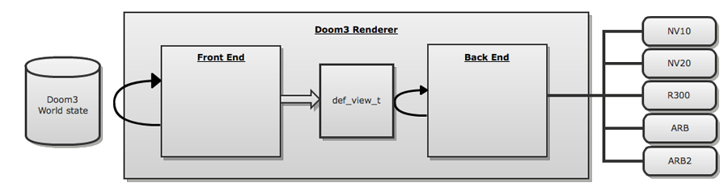
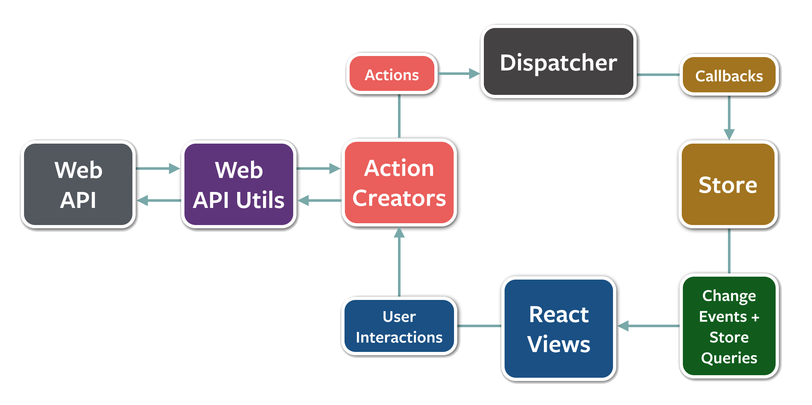
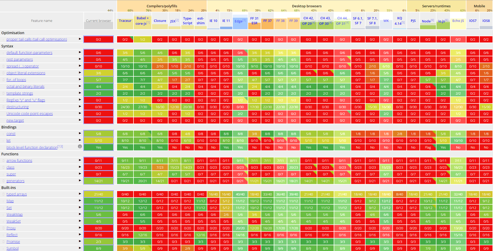

ReactJS
и Cutting edge стек
Me
Илья Сегеда
aka ALFer
- В фронтенде с 2001
- Занимался Web/Flash до 2010
- Занимаюсь JavaScript с 2007
- Twitter: @ALF_er
- Чаты: Illia Segeda aka ALFer
MapReduce позволил сделать Hadoop. С помощью Hadoop показал как большие сайты обрабатывают их данные.
Dynamo описал как писать ДБ чтоб они могли работать вместе и скейлились с появлением новых нод и кластеров. Отсюда выросли Cassandra и Riak.
Twitter потом свитчнулся обратно. Но это лишь из-за не отполированности реализации идеи. Тогда же появляется Backbone.js, что способствовало росту количества приложений с такой архитектурой. (В 2011 появляется Bootstrap)
Angular.js структурировал приложения лучше Backbone.js, повысил их тестируемость и позволил шире использовать best practices, скрыв нудятину вроде binding data и rendering
Немного истории
- В 2003 Brad Fitzpatrick выпустил Memcached, и показал как устроен LiveJournal
- В 2004 Google опубликовал описание MapReduce, и показал как обрабатывать данные
- В 2007 Amazon опубликовал описание Dynamo, и показал как строить БД
- В 2010 Twitter свитчнулся на client-side templating, превратив сервер в просто API
- В 2012 Google выпускает Angular.js 1.0
В 2013 Pete Hunt выступает с докладом
Rethinking Best Practices и делает ещё одну революцию
ReactJS
Как бы нам хотелось
Data
Library
DOM
Library(Data) → DOM
Объеденим логику отображения и само отображение
Но как же separation of concerns?
Объеденим логику отображения и само отображение
Но как же separation of concerns?
Темплейты разделяют не concerns, а технологии
Объеденим логику отображения и само отображение
Но как же separation of concerns?
Темплейты разделяют не concerns, а технологии
А надо уменьшить coupling и увеличить cohesion
Объеденим логику отображения и само отображение
Но как же separation of concerns?
Темплейты разделяют не concerns, а технологии
А надо уменьшить coupling и увеличить cohesion
React представляет компоненты
Они очень слабо связанны между собой (coupling)
Они отлично сплочены (cohesion)
Вы пишете на JS, а не на templating language
Они являются first-class sitizen'ами для языка
React представляет JSX
Он не обязателен
Он удобен
Вы пишете HTML на JS
<a href="http://smartme.com.ua/">Make me smart</a>
React.DOM.a({ href: "http://smartme.com.ua/" }, "Make me smart")
React ререндерит всё дерево
Как в 90ые с server-rendering'ом. React декларативно описывает как должен выглядеть наш UI в конкретный момент времени
И чтоб это не тормозило используется Virtual DOM
- Построить новое виртуальное дерево
- Сравнить со старым деревом
- Вычислить минимальное количество мутаций ДОМ
- Выполнить их пачкой
React ререндерит всё дерево
React ререндерит всё дерево
components
operations
Дополнительные плюсы React
Вместо того чтоб ловить ивенты клика в каждой ячейке таблицы можно ловить их на самой таблице. Это производительней.
Rect может рендерить ваше приложение в просто строку. Тоесть, его можно запустить на сервере. И это большой шаг к изоморфности
Flux
Возникла проблема
Как нам структурировать приложение так чтоб работа с данными была такой же удобной как и работа с компонентами?
Пример "Банковский счёт"
| Транзакция | Значение | Баланс |
|---|---|---|
| Создали счёт | 0 | 0 |
| Депозит | 200 | 200 |
| Снятие | 50 | 150 |
| Депозит | 100 | 250 |
Action
{
type: Actions.WITHDREW_FROM_ACCOUNT,
data: {
accountID: 7,
amount: 50,
date: 1429468551933
}
}
Store
let balance = 0;
function onDispatch(action) {
switch (action.type) {
case Actions.WITHDREW_FROM_ACCOUNT:
balance -= action.data.amount;
break;
}
}
getBalance();
В чём же разница?
- О! Так это же Модели. Сейчас я сюда Бекбончик прикручу.
- Я тебе прикручу! Ты где у Сторов Сеттеры увидел?
model.balance;
store.getBalance();Object.observe(model, changes => {...});
store.subscribe(() => {...});model.balance = 1000000;
???
Store - это функция от Actions
Store(initialState, ...actions) → currentState
Следующий шаг
Изменение счёта - это ведь ассинхронная операция!
function onDispatch(action) {
switch (action.type) {
case Actions.WITHDREW_FROM_ACCOUNT:
requestWithdrawal(
action.data.accountId,
action.data.amount
).then(res => balance -= res.amount);
break;
}
}
function requestWithdrawal(account, amount) {
requestWithdrawal(account, amount)
.done(
res => dispatch({
type: Actions.WITHDREW_FROM_ACCOUNT,
data: {...}
}),
err => dispatch({
type: Actions.WITHDRAWAL_FAILED,
data: {...}
});
);
}
Но что если
Но что если
{
type: Actions.SHOW_NOTIFICATION,
data: {
message: "Возникла ошибка",
...
}
}
Но что если
{
type: Actions.SHOW_NOTIFICATION,
data: {
message: "Возникла ошибка",
...
}
}
WRONG!
let messages = [];
function onDispatch(action) {
switch (action.type) {
case Actions.WITHDRAWAL_FAILED:
messages.push("Возникла ошибка");
break;
case Actions.NOTIFICATION_DISMISSED:
messages = [];
break;
...
}
}
Что нам это даёт?
Совокупность всех Action описывает состояние нашего приложения в данный момент времени.
Зарепортить баг проще простого!
Юзер прикрепляет историю всех Action с параметрами к багрепорту (ну не совсем юзер), а мы спокойно их прокручиваем в нужном порядке и получаем нужное состояние приложения
Общая схема
It's already Monday but we still don't have brand new Flux implementation
React-router
React.render((
<Router>
<Route path="/" component={App}>
<Route path="about" component={About}/>
<Route path="users" component={Users}>
<Route path="/user/:userId" component={User}/>
</Route>
<Route path="*" component={NoMatch}/>
</Route>
</Router>
), document.getElementById("container"));
ImmutableJS
Persistent
Immutable
Data structures
Immutable - создали один раз и оно не меняется
Persistent - применяя изменения мы получаем новую структуру оставляя старую не тронутой
Data structures - структуры данных =)
Пример использования
import { List } from "immutable";
var list = List.of(1, 2, 3); // List [1, 2, 3]
var list2 = list.push(4); // List [1, 2, 3, 4]
list // List [1, 2, 3]
list2 === list // false
Но это же медленно!
var list = [];
for (var i = 0; i < 1000000; i++) {
list.push(i);
} 83ms
var list = Immutable.List();
for (var i = 0; i < 1000000; i++) {
list = list.push(i);
} 288ms
На чём это построено?
DAG - Directed acyclic graph
Trie
HAMT - The Hash Array Mapped Trie
Ещё в 60ых такими людьми как Joseph Carl Robnett Licklider (ARPA, Trie), Alan Kay (Smalltalk), Phil Bagwell (Scala) и Rich Hickey (Clojure)
В чём это помогает?
Concurrency - скоро JS будет многопоточным
The Many Mutators Problem
export function touchhAndPrint(touchFn) {
var data = { key: "value" };
touchFn(data);
console.log(data.key); // ?
}
Что же поменялось?
Но для нас важно, что
ReactJS имеет lifecycle метод shouldComponentUpdate(nextProps, nextState)
Например, Om - это обёртка на Clojure над ReactJS и он работает быстрее!
Undo фича за бесценок
Webpack
Что такое Webpack
- Module bundler
- Понимает CommonJS, AMD и ES6 modules
- Множественные Entrypoints
- Воспринимает все assets как модули
- Позволяет трансформировать модули
Множественные Entrypoints
module.exports = {
entry: {
entry1: './entry1',
entry2: './entry2'
},
output: {
path: 'output',
filename: 'bundle-[name].js'
},
plugins: [
new CommonsChunkPlugin('common', 'bundle-[name].js')
]
};
Loaders
module.exports = {
module: {
loaders: [
{
test: /\.(gif|jpe?g|png)$/,
loader: "url?limit=10000"
},
{
test: /\.css$/,
loader: "style!css"
},
{
test: /\.styl$/,
loader: "style!css!stylus"
}
]
}
};
Pre/Post Loaders
module.exports = {
module: {
preLoaders: [{
test: /\.js$/,
exclude: /(node_modules)\//,
loader: "eslint"
}],
postLoaders: [{
test: /\.js$/,
exclude: /(test|node_modules)\//,
loader: 'istanbul-instrumenter'
}]
}
};
Load On Demand
var a = require("./a");
a.foo(console.log.bind(console));
a.bar(console.log.bind(console)); entry.js
module.exports = {
foo: function (callback) {
callback("foo");
},
bar: function (callback) {
require.ensure(["./b"], function (require) {
require("./b").bar(callback);
});
}
}; a.js
module.exports = {
bar: function (callback) {
callback("bar");
}
}; b.js
Всё то, что вы хотите
- Source maps
- Dedupe dependencies
- Loaders под любой формат
Babel
Что такое Babel?
- Компилятор JavaScript
- ES6+
- JSX
- Flow
Как он работает?
Превращает код в AST
Манипулирует AST
Превращает AST в код
Результат
 http://kangax.github.io/compat-table/es6/GraphQL / Relay
{
user(id: 3500401) {
id,
name,
isViewerFriend,
profilePicture(size: 50) {
uri,
width,
height
}
}
}
{
"user" : {
"id": 3500401,
"name": "Jing Chen",
"isViewerFriend": true,
"profilePicture": {
"uri": "http://someurl.cdn/pic.jpg",
"width": 50,
"height": 50
}
}
}
React-native
Не "write once, run anywhere",
а "learn once, write anywhere"
Who to follow...
- Sebastian Markbåge @sebmarkbage
- Lee Byron @leeb
- Sebastian McKenzie @sebmck
- Vjeux @Vjeux
- Jing Chen @jingc
- Pete Hunt @floydophone
- Ryan Florence @ryanflorence
- Dan Abramov @dan_abramov
- Ingvar Stepanyan @RReverser
- https://medium.com/@dan_abramov/my-react-list-862227952a8c